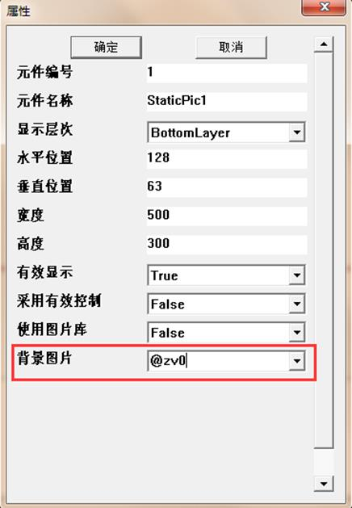
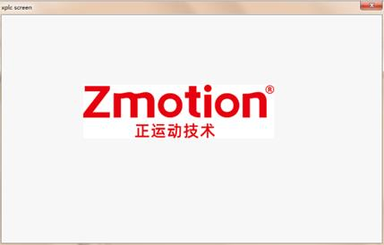

|
类型 |
锁存处理 |
|
描述 |
根据当前锁存信息，将待显示图像img转换到锁存通道号latch_id指定的锁存区域，并更新锁存信息，锁存信息可能有合法性检查、范围限制等改变。
锁存指具有保护的缓存区域，只支持单通道和三通道，8U类型的图像显示 注意：因显示方式限制，显示指令不能频繁连续调用，否则可能导致后一条指令丢失，即指令触发保护机制而不更新显示直接返回 显示指令包括ZV_LATCH、ZV_LATCHTRANS、ZV_LATCHCLEAR |
|
语法 |
ZV_LATCH(img,latchId,type)
参数： img：ZVOBJECT图像类型，待显示图像 latchId：锁存通道号，对应图片控件背景图片参数引用的变量@ZV后的数字，如通道0对应@ZV0，锁存通道本身是独立的，通过参数设置绑定控件 type：显示方式，0-维持当前的缩放比例和平移，1-居中填充显示，即以控件支持的最大尺寸显示  |
|
适用控制器 |
支持ZV功能或者5系列以上的控制器 |
|
例子 |
例如：  ZVOBJECT img ZV_ImgRead(img,"logo.png",0)'以原图像格式读取图像 ZV_LATCH(img,0) '通道0显示图片img |
|
相关指令 |